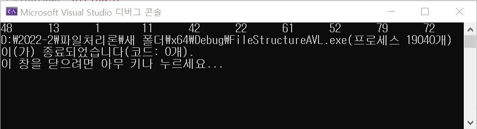
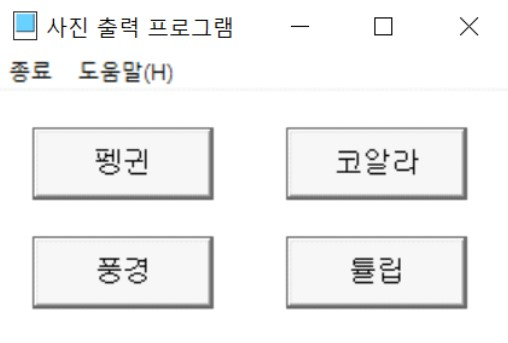
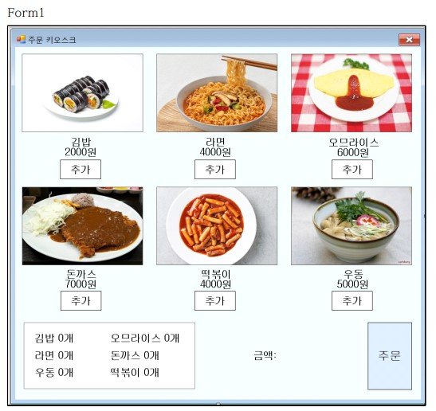
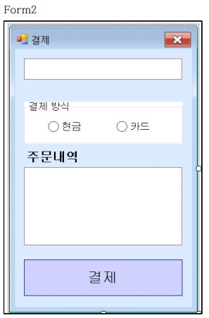

4명의 팀으로 작업하였고, 디자인과 전체적인 흐름, 수정 담당


최서연
회원가입 하러가기
자기소개서
프로젝트 소개
C를 이용한 AVL 트리 구현

정렬 후 전위순회 방식으로 각 노드들의 숫자를 출력하는 프로그램
C++ sfml을 사용한 당구 게임
4명의 팀으로 작업하였고, 디자인과 전체적인 흐름, 수정 담당
C++ 윈도우즈 프로그래밍

C# WindowsForm을 이용한 주문 프로그램


2개의 폼을 사용하여 주문 창과 결제 창이 분리되어 있음